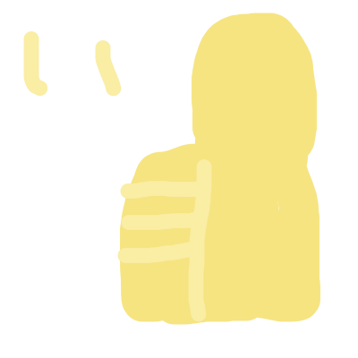
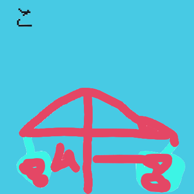

こんにちは！
僕の名前はムーと言います。よろしく！！
今回は、パソコンを分解しました。どうなっているのか気になります。
今回は外観などの紹介です。
まずは外観ですね。

これはprime(プライム)というパソコンです
ちなみにプライムはドスパラが出しています。

右側にはUSBが２つ、有線LANの差込口、VGA、電源の差込口、ケンジントンロックのさすところがあります。

左側にはUSBがひとつ、マイク・イヤホンジャック、なんかの排気口、HDMI、SDカードのスロットがあります。

液晶はこんな感じ（顔が写っていたからモザイクをかけました）

キーボードとトラックパッドはこんな感じあれ・・・キーボードの中央が膨らんでいる！！
実は・・・

バッテリーが膨らんでいるんです！！
これは、リチウムイオンバッテリーの欠点で、劣化していくうちに、だんだん膨らんでいってしまっているからです。
なので起動がしなくなったのではないかと思います。
今回はここまで。
いかがでしたか？
もしこの記事が気に入ったら上にある評価のURLから是非是非いいねを！！
頑張って投稿！！〜ムー〜 これからもよろしく！